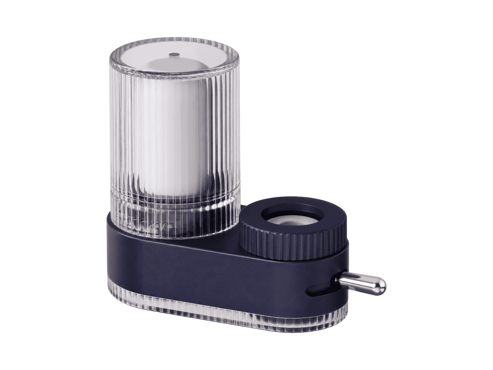

Для крана
Для кранаRP-F02
Фильтр для крана с поворотом на 360°
SKU: RP-F02
MOQ: уточняйте при запросе
Главная/Продукция/Фильтры для крана/ RP-F01

Фильтры для крана
Классический фильтр для крана (SG-LT-UF200(13))
RP-F01 — Классический фильтр для крана. Ключевая спецификация: Корпус ABS. Спецификации подтверждаются для каждой модели и заказа.
Классический кран-фильтр. Опции корпуса, картриджа и отделки подтверждаются при заказе.
Напряжение / частота настраиваются под страну назначения. Другие конфигурации подтверждаются для каждого заказа.
RP-F01 — классический кран-фильтр (SG-LT-UF200(13)), фильтрующий воду из крана. Корпус из ABS, картридж керамика + GAC, номинальный расход 2,5 л/мин и номинальный объём 2000 л. Работает на муниципальной водопроводной воде при 0,1–0,4 МПа и 5–38°C. Опции корпуса, картриджа и отделки подтверждаются при заказе, а на странице показана демонстрация установки.
Каков минимальный объём заказа?
Первый заказ — 200 единиц на модель, повторные заказы — 500 единиц.
Можно ли заказать образец до оптового заказа?
Да. Образцы готовы через 15 дней, стоимость образца возвращается при первом оптовом заказе. Оптовые заказы занимают 40 дней после утверждения образца и отгружаются FOB Шэньчжэнь.
Каковы его номинальный расход и объём?
Номинальный расход — 2,5 л/мин, номинальный объём — 2000 л.
Демонстрация установки.
7 строк спецификаций из каталога ROPureOEM.
| Корпус | ABS |
|---|---|
| Картриджи | Керамика + GAC |
| Номинальный расход | 2.5 L/min |
| Номинальный объём | 2000 L |
| Давление | 0.1–0.4 MPa |
| Температура | 5–38°C |
| Источник воды | Муниципальная водопроводная вода |
Спецификации взяты из каталога ROPureOEM. Если значение ещё не подтверждено, оно указано как «Подтверждается при заказе» — мы не публикуем неподтверждённые цифры.
Для кранаФильтр для крана с поворотом на 360°
SKU: RP-F02
MOQ: уточняйте при запросе
 Для крана
Для кранаФильтр для крана из углеродного волокна
SKU: RP-F06
MOQ: уточняйте при запросе
 Для крана
Для кранаФильтр для крана с индикатором ресурса фильтра
SKU: RP-F08
MOQ: уточняйте при запросе

Для кранаФильтр для крана — встроенный
SKU: RP-F10
MOQ: уточняйте при запросе